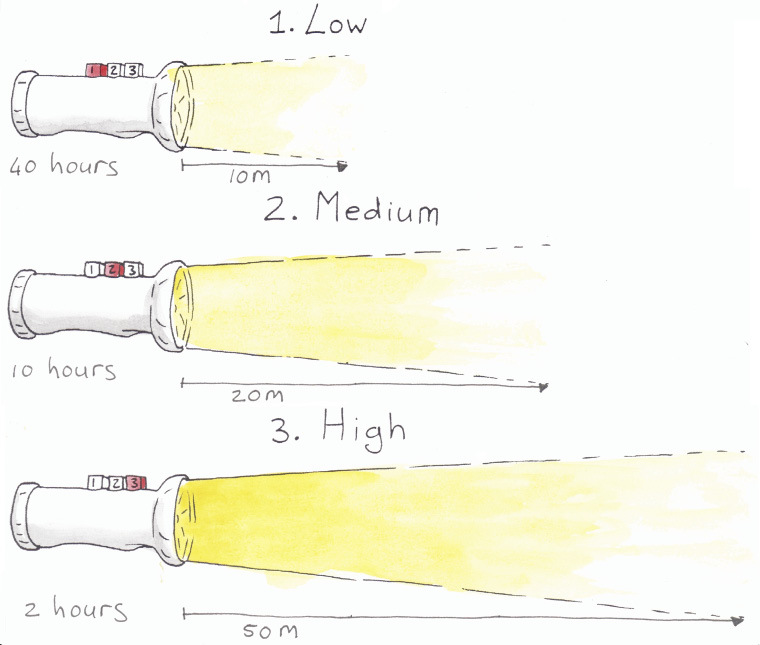
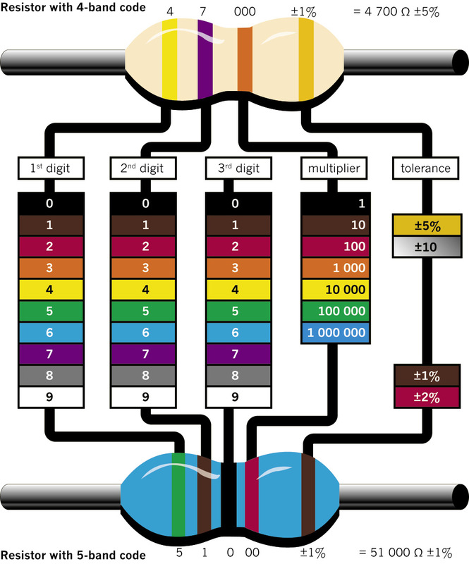
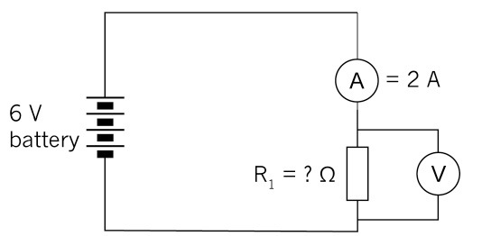
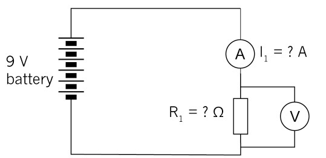

Resistors and ohm’s law
In this chapter, you will learn how to use resistors in electric circuits to control a current. You will discover that there are different kinds of resistors for different purposes, and you will learn how to read the amount of resistance on a resistor. You will also learn about Ohm's Law, which relates the quantities of voltage, current and resistance, and you will use formulae to do calculations to find the values of voltage, current and resistance.

Figure 1: You can change the brightness of the light on some torches. The brighter the light you choose, the faster the battery will run out.

Figure 2: How to read the colour bands on a resistor to find out what its resistance is. (You will only work with resistors with four-colour bands, such as the one at the top.)
Resistors and their identification codes
What is resistance?
Electricity flows far more easily through copper wire than through plastic wire, string or grass. Copper wire has a low resistance to electricity flow, whereas plastic wire has a high resistance. Because electricity flows easily through copper wire, copper is a good conductor of electricity.
To resist something means to try to prevent it. If you sit in a tree and the wind blows hard, you can resist falling down by clinging to the branches.
To conduct means to allow something to pass through.
The resistance that an object, for example a piece of wire, offers to the flow of electricity can be measured.
Resistance is measured in ohms. We use the symbol Ω
When electricity flows through a conductor, heat is generated. Some metals, such as nickel and chrome, resist the flow of electricity quite strongly, and heat up when electricity is forced to flow through it. The heating elements of stoves and kettles are normally made of a mixture of nickel and chrome. When some metals get extremely hot, they emit light.
When something emits light, it is a source of light. A light bulb is a source of light, but a mirror is not a source of light as it only reflects light.
If the resistance in a circuit is very low, for example when the terminals of a cell are connected with a piece of thick copper wire, the current will flow very strongly. This is called a "short circuit". It can result in so much heat being generated that damage is caused to the cell and other parts of the circuit, the conducting wires can melt and a fire can start.
By adding more resistance to a circuit, you can control how great the current is that flows through the circuit. In this way, you can protect the components in a circuit from too much current flowing through them. Increasing the resistance also means the cell or battery powering the circuit will last longer. You can add precise amounts of resistance by using resistors with the required resistance value.
What is a resistor?
A resistor is a specially designed component that is normally used in a circuit to limit the current. Resistors are made of materials with a high resistance to electricity flow, and come in the form of thin wires or films. Resistors also have precise resistance values that don't change much in different environmental conditions.
The most commonly used resistors look like tubes, with two wires to connect it to the circuit. The symbol to show a resistor in a circuit diagram is an open rectangle or a zigzag line.
Figure 3: A typical resistor
Figure 4: Circuit symbols for resistors
Low-value resistors often have their resistance value printed on them in numbers, while high-value resistors are coded, using coloured bands. The first three bands give the value of the resistor in ohms. The colour-code chart on the second page of this chapter will help you to work out the resistance value in ohms.
The fourth band on a resistor shows the accuracy rating as a percentage. This is also called the "tolerance". The band is gold or silver, depending on the tolerance. For the circuits you will be building, this is not important.
Kilo means multiply by a thousand, for example 1 km = 1 000 × 1 m.
Mega means multiply by a million.
Resistors are the most commonly used components in electronics, as they are useful to control current. You will see how they are used in the following weeks.
Units of measurement: ohms, kilo-ohms and mega-ohms
- 1 kΩ = 1 000 Ω = 10³ Ω
- 1 MΩ = 1 000 kΩ = 1 000 000 Ω = 10⁶ Ω
1. Work out and write down the resistance of each of these resistors:
(a)
Figure 5
(b)
Figure 6
(c)
Figure 7
(d)

Figure 8
2. Fill in the colour codes on these blank resistors to show the given resistance, or write the colour of each band above it if you don't have coloured pencils or pens.
(a) 200 kΩ
Figure 9
(b) 300 Ω
Figure 10
3. Describe the function of a resistor as a component in an electrical circuit.
Ohm's law
There is a special relationship between the voltage, current, and resistance in any circuit. You can control any one of these three variables by changing the other two variables.
Ohm's Law states that as voltage increases, the current increases if the resistance is constant.
A variable is a quantity that can have different values, for example the amount of water in a tank. A constant is a quantity that always has the same value, for example gravitational acceleration. Sometimes we call a quantity a constant because we decide to keep it constant.
In the formula for Ohm’s Law:
- V is the potential or voltage difference measured in volts,
- I is current measured in amps, and
- R is resistance measured in ohms.
Figure 11 shows this relationship in a formula triangle.
When the voltage and current are known, the resistance can be calculated with:
\(R =\frac{\text{V}}{\text{I}}\).
When the resistance and current are known, the voltage can be calculated with:
\(\text{V} = \text{I} \times \text{R}\).
When the resistance and voltage are known, the current can be calculated with:
\( \text{I}=\frac{\text{V}}{\text{R}}\).
Figure 11
Questions
Consider the following circuit:
Figure 12
1. What does Ohm's Law say will change in a circuit when the resistance is kept constant but the number of cells in series is increased?
2. How will the current change if the voltage supplied by the battery of cells is kept constant but the resistor is replaced by another resistor with a lower resistance?
3. How would you describe the relationship between the current and the voltage in a circuit?
4. How would you describe the relationship between the current and the resistance in a circuit?
5. Which of these changes will cause the current through an electrical circuit to decrease? Write down all the letters of the statements that are correct.
(a) a decrease in the voltage
(b) a decrease in the resistance
(c) an increase in the voltage
(d) an increase in the resistance
6. An electrical circuit has three 1,5 V cells in series that is connected to a lamp and a resistor in series. Which of the following things would cause the lamp to shine less brightly? Write down all the letters of the statements that are correct.
(a) an increase in the voltage of the battery (add another cell)
(b) a decrease in the voltage of the battery (remove a cell)
(c) a decrease in the resistance of the resistor
(d) an increase in the resistance of the resistor
Calculations using ohm's law
Last week, you learnt how Ohm's Law can be used to predict what will happen when you change one or two of the following variables: current, voltage or resistance. You will now use the formulas of Ohm's Law to make predictions. Remember to use the correct units in the formula!
Example 1
Calculate the value of the resistance in the diagram below if the voltage across the resistor is 12 V and the current through the resistor is 2 A.
\[\begin{align} \text{R} & = \frac{\text{V}}{\text{I}} \\ & = \frac{12 \text{V}}{2 \text{A}}\\ & = 6 Ω \\ \end{align}\]
Figure 13
Example 2
Calculate the value of the voltage supply in the circuit below if the resistor has a value of 4 Ω and the current through the resistor is 2,5 A.
\[\begin{align} \text{V} & = \text{I} \times \text{R} \\ & = \text{2,5 A} \times \text{ 4 Ω} \\ & = 10 V \\ \end{align}\]
Figure 14
Example 3
Calculate the value of the current in the circuit below if the resistor has a value of 3 Ω and the voltage across the resistor is 12 V.
\[\begin{align} \text{I} & = \frac{\text{V}}{\text{R}} \\ & = \frac{12 \text{V}}{3 Ω }\\ & = 4 A \\ \end{align}\]
Figure 15
Questions
1. What will the potential difference be if the current in a circuit is 10 A and the total resistance is 1 000 Ω?
2. Given V = 10 V and R = 1 kΩ, what will the value of the current be in a circuit?
3. Given V = 20 V and R = 5 kΩ, solve for the current.
4. A tumble dryer in a laundry service uses a 220 V power source. The coils of the heater provide an average resistance of 12 Ω. What is the current flowing through the heating coils?
5. A 9 V battery maintains a current of 3 A through a radio. What is the resistance in the circuit?
6. If the voltage across a circuit is increased four times, what would you expect to happen to the current through the circuit?
7. (a) In the circuit below, calculate the value of the resistor.

Figure 16
(b) If two more cells are added to the circuit, will the current increase or decrease? Check your prediction using the formula.

Figure 17
8. Calculate the battery voltage for the circuit below:
Figure 18
9. Look at the circuit below:
Figure 19
(a) Calculate the current through R2.
(b) What will the current be through R1.?
(c) What will the voltage across R1. be?
(d) What will the resistance value of R1. be?
Next week
In the next chapter, you will learn about components commonly used in electronic systems and their special functions.